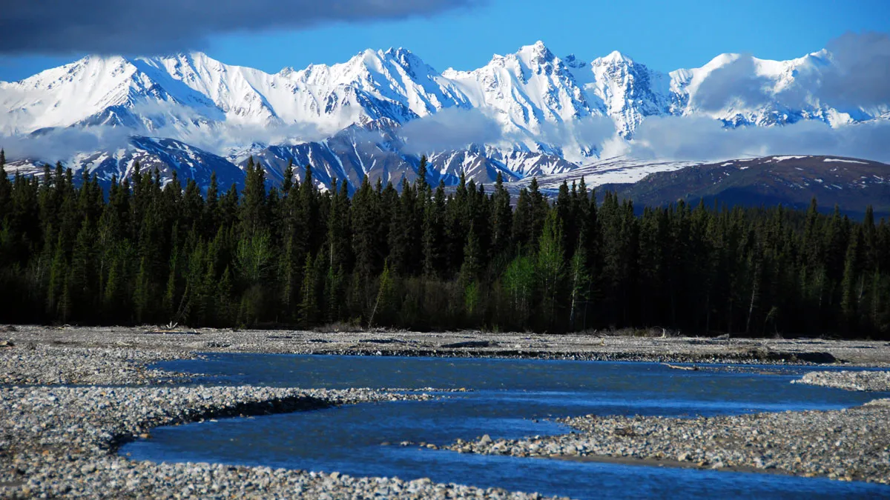

Biomes
Biomes are large, distinct ecological regions of the Earth characterized by specific climatic and geographic
conditions, as well as the flora and fauna that live there. There are many different biomes across the globe, each
with its own unique set of characteristics. Examples of the most well-known biomes include tropical rainforests,
temperate forests, grasslands, deserts, tundra, and aquatic biomes. Plant and animal species such as monkeys,
birds, snakes, and a diverse range of insects are found near the equator. The canopy layer of the rainforest is
particularly important, as it provides a habitat for many different species.
Aquatic biomes are home to a diverse range of aquatic species including fish, whales, dolphins, turtles, and many
different types of plants. They are characterized by low rainfall and a mix of grasses and small shrubs, and are
found in both tropical and temperate regions. Deserts are some of the harshest environments on Earth, but many
plant and animal species have adapted to survive due to their low temperatures and high temperatures. Taylimes,
rivers, and wetlands also form biomes. By studying biomes, scientists can gain a deeper understanding of how human
activities such as climate change, deforestation, and pollution are impacting our environment and develop
strategies for mitigating these impacts to preserve the diversity of life on Earth.

Learning about biomes is important for understanding how living organisms interact with each other and their
environment. Biomes are home to a wide variety of plant and animal species, and studying them helps us appreciate
the importance of biodiversity and the need to conserve it. Biomes are particularly vulnerable to climate change,
and understanding them can help us develop strategies to mitigate the impacts of global warming. Additionally,
biomes play a critical role in agriculture, and studying them can help us develop sustainable agricultural
practices that support both human needs and ecosystem health. Overall, studying biomes is essential for
understanding ecosystems, biodiversity, climate change, and agriculture, and for developing strategies to protect
and conserve our planet's ecosystems.